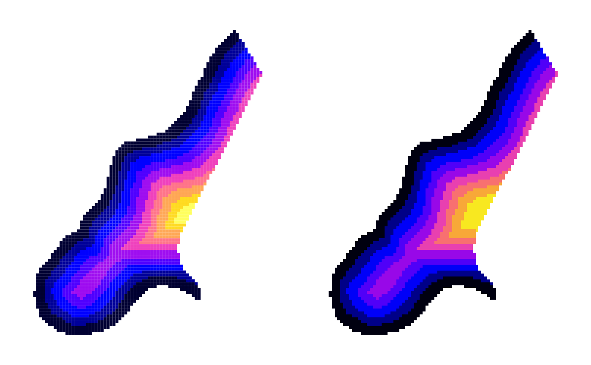

SGDF2PCT.RdThis function converts a three-band SpatialGridDataFrame into a single band of colour indices and a colour look-up table using RGB2PCT. vec2RGB uses given breaks and colours (like image) to make a three column matrix of red, green, and blue values for a numeric vector.
SGDF2PCT(x, ncolors = 256, adjust.bands=TRUE) vec2RGB(vec, breaks, col)
| x | a three-band SpatialGridDataFrame object |
|---|---|
| ncolors | a number of colours between 2 and 256 |
| adjust.bands | default TRUE; if FALSE the three bands must lie each between 0 and 255, but will not be streched within those bounds |
| vec | a numeric vector |
| breaks | a set of breakpoints for the colours: must give one more breakpoint than colour |
| col | a list of colors |
The value returned is a list:
a vector of colour indices in the same spatial order as the input object
a vector of RGB colours
Roger Bivand
#> /tmp/Rtmp48CPqR/temp_libpath56868786764d9/rgdal/pictures/Rlogo.jpg has GDAL driver JPEG #> and has 175 rows and 200 columns#> Warning: GeoTransform values not available#> /tmp/Rtmp48CPqR/temp_libpath56868786764d9/rgdal/pictures/Rlogo.jpg has GDAL driver JPEG #> and has 175 rows and 200 columns#> Warning: GeoTransform values not available#> /tmp/Rtmp48CPqR/temp_libpath56868786764d9/rgdal/pictures/Rlogo.jpg has GDAL driver JPEG #> and has 175 rows and 200 columns#> Warning: GeoTransform values not availabledata(meuse.grid) coordinates(meuse.grid) <- c("x", "y") gridded(meuse.grid) <- TRUE fullgrid(meuse.grid) <- TRUE summary(meuse.grid$dist)#> Min. 1st Qu. Median Mean 3rd Qu. Max. NA's #> 0.000 0.119 0.272 0.297 0.440 0.993 5009opar <- par(no.readonly=TRUE) par(mfrow=c(1,2), mar=c(1,1,1,1)+0.1) image(meuse.grid, "dist", breaks=seq(0,1,1/10), col=bpy.colors(10)) RGB <- vec2RGB(meuse.grid$dist, breaks=seq(0,1,1/10), col=bpy.colors(10)) summary(RGB)#> red green blue #> Min. : 0.00 Min. : 0.00 Min. : 36.0 #> 1st Qu.: 0.00 1st Qu.: 0.00 1st Qu.: 87.0 #> Median : 0.00 Median : 0.00 Median :189.0 #> Mean : 75.31 Mean : 22.98 Mean :171.1 #> 3rd Qu.:159.00 3rd Qu.: 15.00 3rd Qu.:255.0 #> Max. :255.00 Max. :255.00 Max. :255.0 #> NA's :5009 NA's :5009 NA's :5009meuse.grid$red <- RGB[,1] meuse.grid$green <- RGB[,2] meuse.grid$blue <- RGB[,3] cols <- SGDF2PCT(meuse.grid[c("red", "green", "blue")], ncolors=10, adjust.bands=FALSE) is.na(cols$idx) <- is.na(meuse.grid$dist) meuse.grid$idx <- cols$idx image(meuse.grid, "idx", col=cols$ct)par(opar) # Note: only one wrongly classified pixel after NA handling/dropping # The functions are not written to be reversible sort(table(findInterval(meuse.grid$dist, seq(0,1,1/10), all.inside=TRUE)))#> #> 10 9 8 7 6 5 4 2 3 1 #> 28 54 99 118 237 417 431 507 525 687#> #> 10 1 2 3 4 6 5 9 7 #> 82 99 118 237 417 431 507 525 687